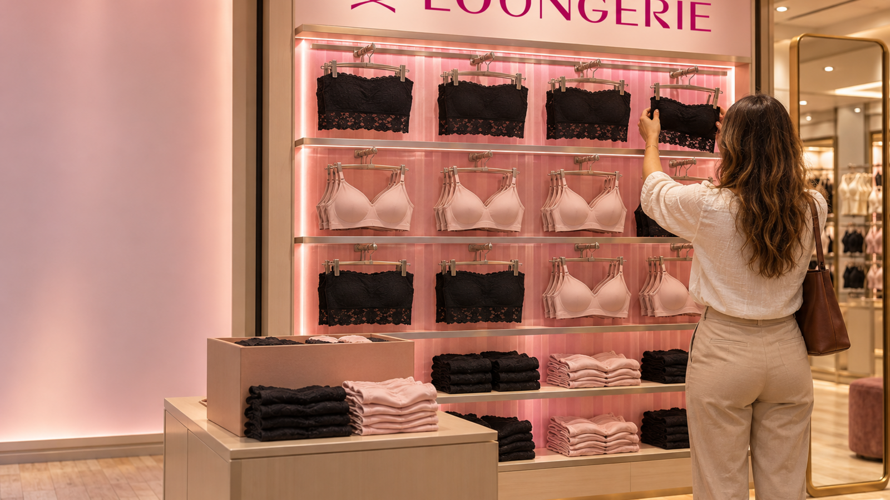
Cada ocasião na vitrine certa, em 121 lojas no mesmo dia.
Programa Vitrine de Ocasião · Loungerie e 75 LAB.
Somos os dois lados do balcão: quem opera a loja e quem vende a marca.
Estratégia, projeto, produção e conferência de PDV, de ponta a ponta.
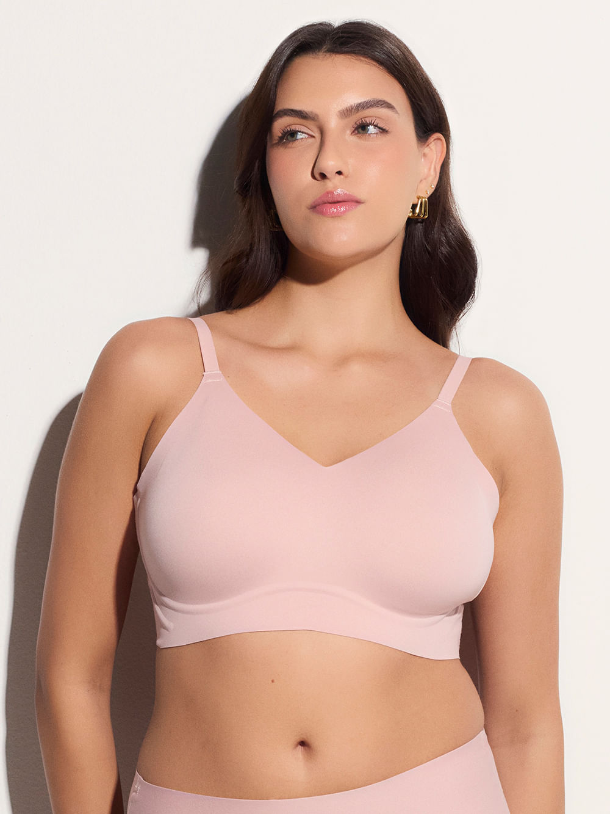
A peça que a gente desenha a gente já teve de instalar e cobrar.
Projetos em ondas que viram ativo, PDV que se mede e plataformas próprias.
Marcas que confiam na 75 LAB
A gente já conhece suas lojas por dentro.
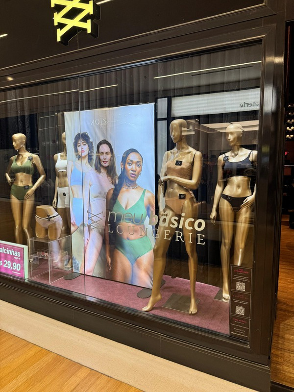
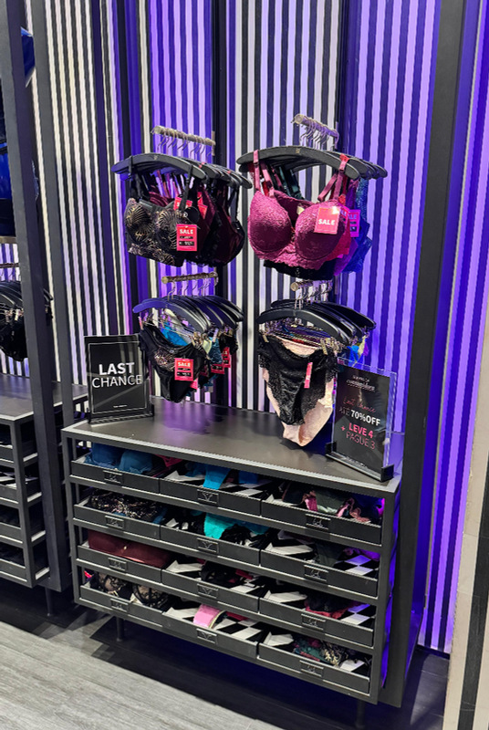
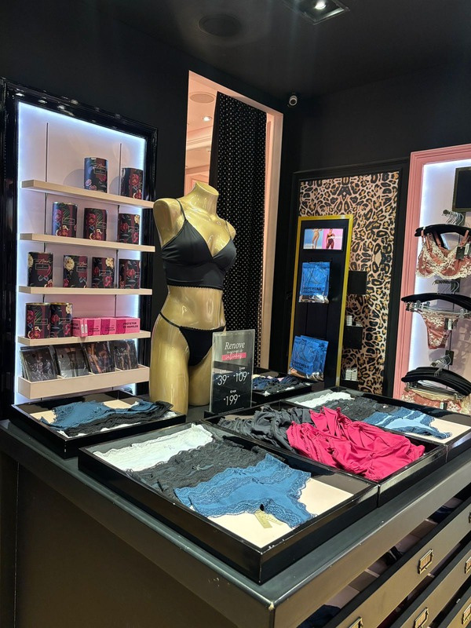
- Loja JK · projeto da loja e piloto de teto
- Retrofit de 5 lojas
- Vitrine de Dia das Mães
- Shopping Plaza Recife
- Safari com o cliente · 8 lojas visitadas, 25 equipamentos medidos
- Roll out de adesivagem · orçado
A marca mudou em setembro; a maioria das vitrines ainda não sabe disso.
A loja nova chega aos poucos, mas 121 vitrines falam com a cliente hoje.
Trocar a vitrine a cada data.
Padrão único em 74 franquias que a marca não opera.
45 coleções, uma vitrine.
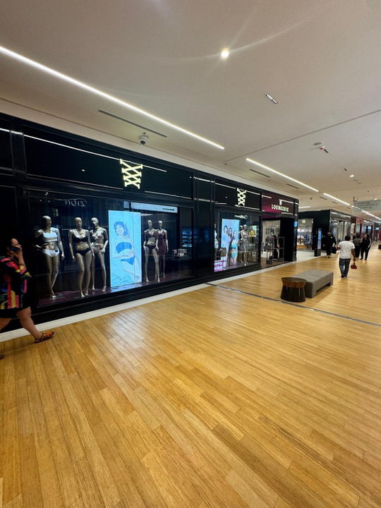
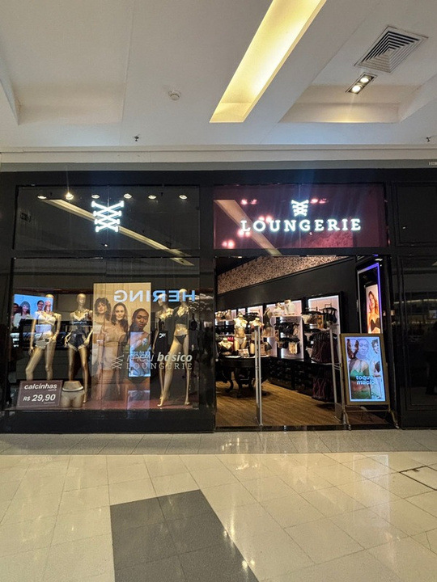
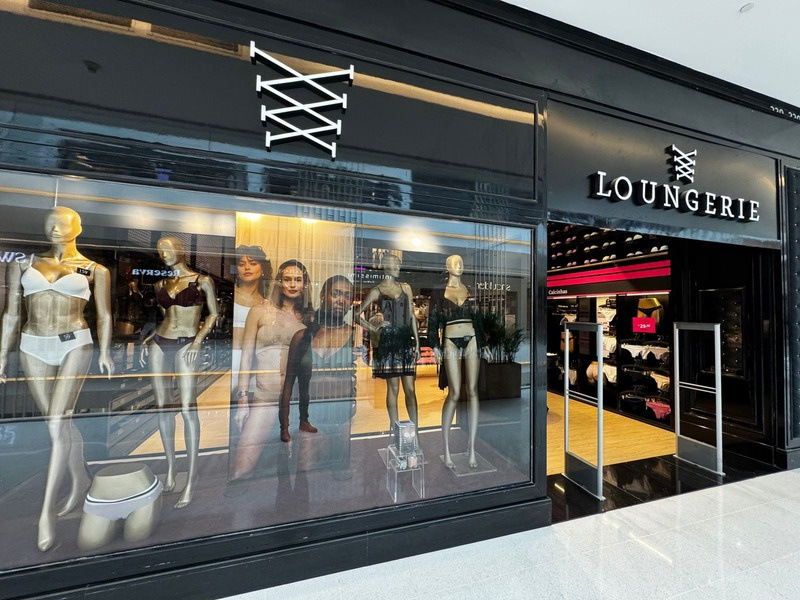
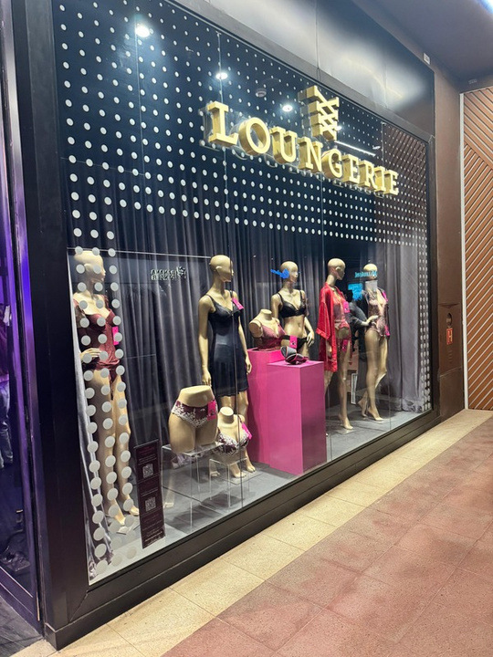
A Hope já unifica a vitrine de 60 lojas novas. Quem padroniza antes ganha o corredor.
Vitrine e visual merchandising viraram padrão de rede.
A ocasião muda.
A vitrine acompanha.
A cliente não precisa de data especial para entrar; precisa ver que aquela ocasião é dela.
Uma base por loja, uma frente por data e a mesma execução em toda a rede.
Piloto em 7 flagships e 1 outlet
As 7 flagships de São Paulo e o Outlet Catarina, lojas que já visitamos. Depois as 47 próprias e, por fim, as 74 franquias com kit fechado.
Vitrine em módulos P, M e G
Três tamanhos de estrutura, fundo de tecido iluminado e pódio giratório nas flagships.
Calendário de troca travado
Verão e Carnaval, Dia da Mulher, Dia das Mães e Namorados, com datas definidas no início do ano.
Foto que prova a troca
A equipe da loja faz a troca, fotografa pelo QR e a 75 LAB entrega o relatório de conformidade em até 5 dias úteis.
A ocasião começa na vitrine e termina no conjunto completo, no celular.
- Uma cena por ocasião, igual em toda a rede
- QR até o conjunto e o tamanho certo
- A vitrine vira stories e página de produto
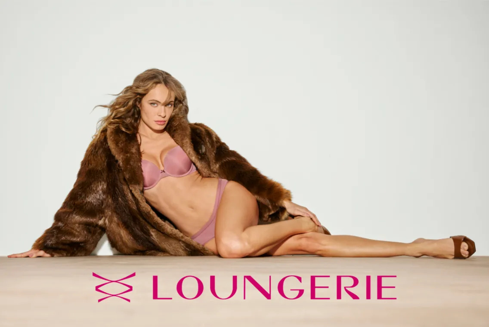
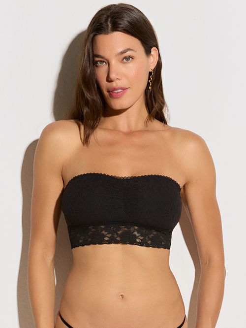
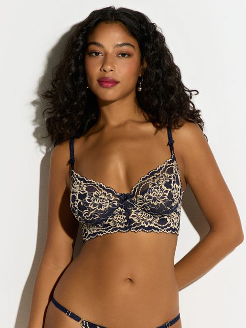
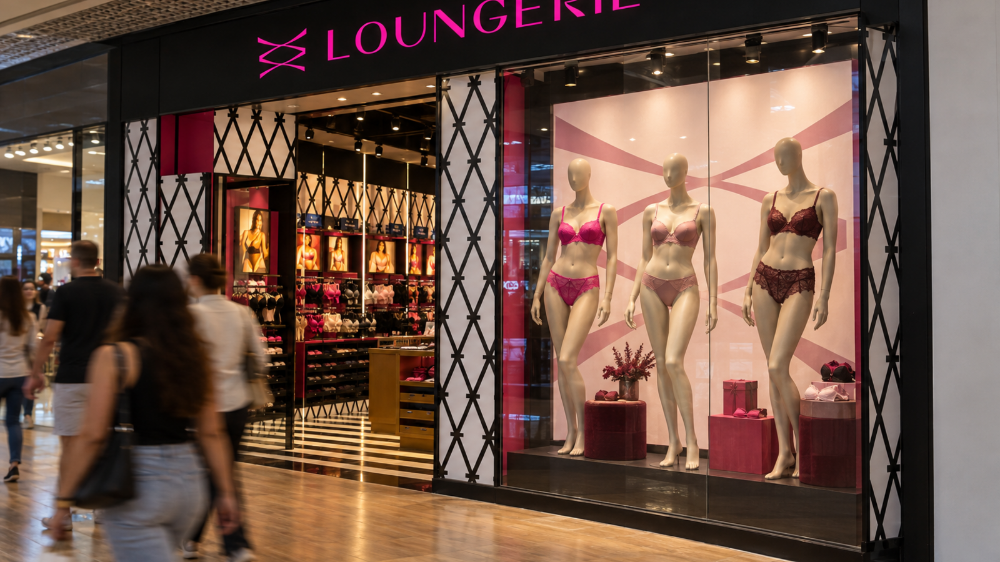
A estrutura fica. A ocasião troca em minutos.
Fundo de tecido iluminado e pódio que gira quando alguém para.
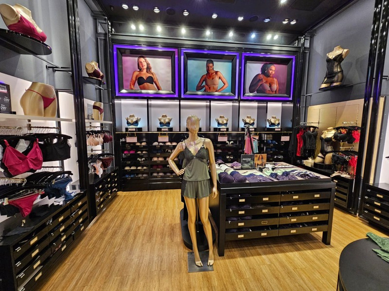
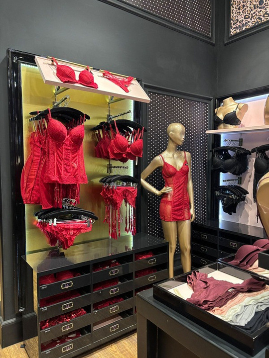
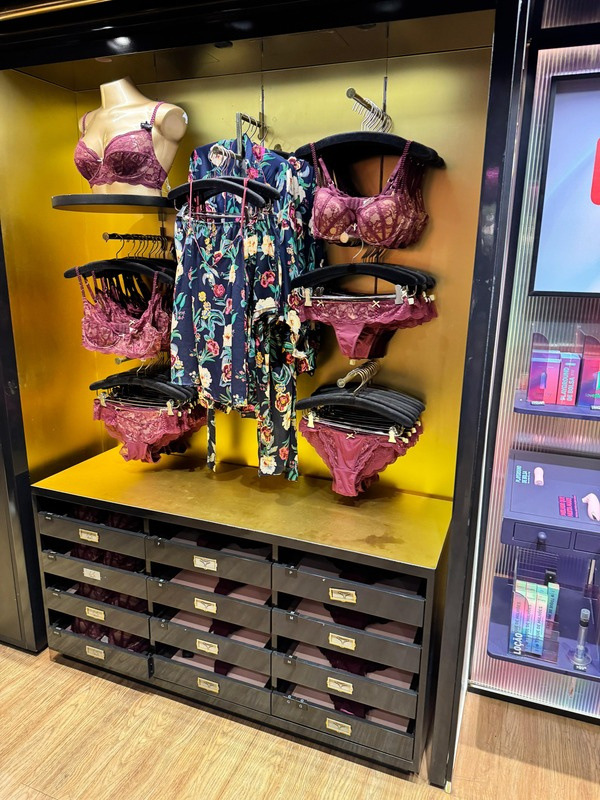
Da vitrine ao caixa, cada peça faz a cliente dar mais um passo.
Toda troca provada por foto; nas flagships, cada parada contada.
Do Carnaval aos Namorados, três ondas até a rede inteira.
O que vamos medir para decidir a próxima data com dado, não com palpite.
Lojas com vitrine conferida no prazo
Paradas diante da vitrine, medidas nas 7 flagships do piloto
Leituras do QR, por loja e por data
Você faz a ocasião. A gente faz ela chegar a cada vitrine.
Fale conosco no WhatsAppCENU · Centro Empresarial das Nações Unidas, Torre Norte
Av. das Nações Unidas, 12.901, Brooklin, São Paulo, SP · CEP 04578-910contato@75lab.com.br · @setecincolab75lab.com.br
WhatsApp (11) 98676-5634Caique BeckerCofundador e Head de Trade · caique.becker@75lab.com.br